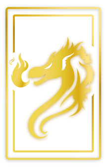

8
0
-
P
O
I
N
T
S
SELECT A MODE

RANDOM
RANDOM MODE
For each round of the game, a number with be randomly choosen to be the main card
click to create game
2->A
2->A MODE
The game will start with 2 as the main card, then go up in order: 3, 4, 5... eventually ending with A
click to create game

thundershadow
thundershadow